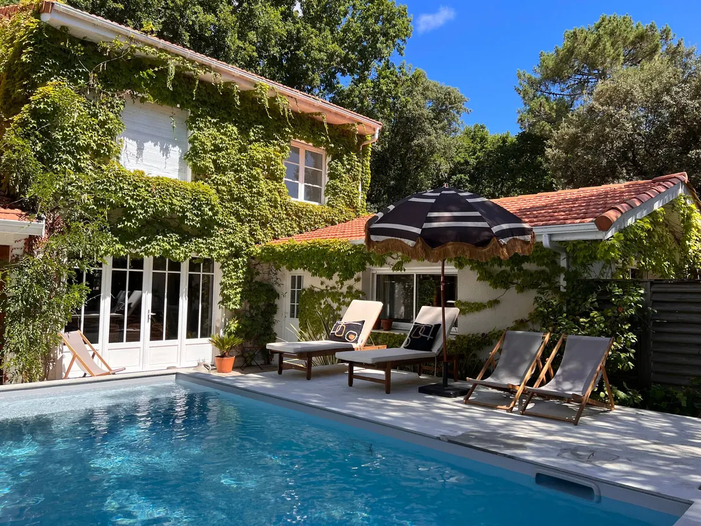
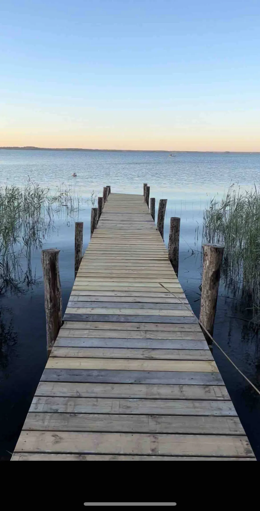

Family holidays in Lacanau
A large, calm lake for little ones, the ocean and its waves for older kids, cycle paths through the pines for everyone: Lacanau is one of the most complete family destinations on the Atlantic coast. Here are our tips, from our family house in Le Moutchic.

Why families love Lacanau
Lacanau, on the Médoc coast, has the unusual feature of bringing together two very different stretches of water just a few kilometres apart.
- Lacanau lake: a large freshwater lake lined with pines, with no waves or currents. The water warms up quickly and the gently sloping beaches are perfect for toddlers. You can also go sailing, paddleboarding and kayaking.
- The ocean beaches, in Lacanau-Océan: miles of fine sand, lifeguarded beaches in season and famous waves. Teenagers will find surf schools there; everyone loves the sunsets over the Atlantic.
- The pine forest and the cycle paths: a network of safe paths links the lake, the forest and the ocean. From Le Moutchic, allow about twenty minutes by bike to reach the beach.
What to do in Lacanau with children?
With toddlers
Choose the lake beaches: the water is calm and shallow near the edge, and the shade of the pines is never far away for a nap or a picnic. Moutchic beach, on the lake, is lifeguarded in summer and has the Handiplage accessibility label (see our guide to Lacanau's beaches). In Le Moutchic, a few waterside restaurants mean you can have dinner facing the lake without taking the car.
With children and teenagers
- Surfing or bodyboarding lessons with a school in Lacanau-Océan: lessons are taught in small groups by qualified instructors.
- Sailing, paddleboarding or kayaking on the lake, easier than at sea for beginners.
- Family bike rides on the cycle paths through the forest.
- Golf, a 3-minute drive from the house, for golfers.
For parents
The great châteaux of the Médoc (Margaux, Saint-Julien, Pauillac) are about 45 minutes away: many offer tours and tastings by appointment. And Bordeaux is just an hour's drive away for a day in the city.
Swimming in the ocean: staying safe
The Atlantic Ocean is magnificent but powerful. With children, swim only on lifeguarded beaches, during lifeguard hours and within the area marked by the flags. Ask the lifeguards about the currents (the "baïnes", rip currents) and always keep children within arm's reach. For the youngest, the lake remains the most relaxed choice.
When to go to Lacanau with the family?
Averages recorded between 2015 and 2024 (source: Open-Meteo):
| Month | Afternoon temperature | Ocean water | Rainy days |
|---|---|---|---|
| May | 19 °C | 16 °C | 12 |
| June | 23 °C | 19 °C | 12 |
| July | 25 °C | 20 °C | 8 |
| August | 25 °C | 22 °C | 7 |
| September | 23 °C | 21 °C | 10 |
| October | 19 °C | 20 °C | 12 |
July and August are the warmest and liveliest months. June and September are often the best compromise for families (with children not yet at school): fewer people, mild days and water that is already pleasant. The spring and autumn half-terms are good for bike rides and forest walks.
Where to stay in Lacanau with the family?
For a large family or several families together, a whole house makes all the difference: everyone has their own room, you cook together and the children enjoy the garden. That's the spirit of La Maison du Lac, our family house in Le Moutchic:
- Up to 12 people: 6 bedrooms (2 of them on the ground floor with a bathroom), 2 bathrooms and 4 toilets, very handy when there are lots of you.
- Private pool from April to October, garden, patio and outdoor dining area.
- The lake 50 metres away on foot, and the ocean beaches a 10-minute drive away (20 minutes by bike).
- Fully equipped kitchen, washing machine, books and board games, Wi-Fi, a private parking space.
- Rated 5.0 out of 5 from 13 reviews; "family" is one of the words that comes up most often in the comments.
Important for parents: the pool has no fence or lock, and the lake is very close. Children must be supervised by an adult at all times. The house has stairs.


See La Maison du Lac's availability10% off your whole stay when you book directly on this site.
Getting to Lacanau
Lacanau is about an hour's drive from Bordeaux. If you're coming by train or plane, Bordeaux Saint-Jean station and Bordeaux-Mérignac airport are the most convenient arrival points; a car is then the easiest way to enjoy the lake, the ocean and the surroundings.
Fancy combining the sea and the city? Our second house, La Maison de Pierre in Bordeaux (8 people), is an hour away. See also our guide to Bordeaux with the family and our itinerary a week in the Gironde with the family.
Frequently asked questions
Is Lacanau good for holidays with young children?
Yes. Lacanau lake, with fresh water and no waves, is ideal for little ones to swim, while the ocean beaches, lifeguarded in season, appeal to older children. A network of cycle paths links the lake, the forest and the ocean.
When to go to Lacanau with the family?
July and August are the warmest months (around 25 °C in the afternoon and ocean water around 20 to 22 °C). June and September are quieter, with days that are still mild (around 23 °C) and water around 19 to 21 °C.
Where to stay in Lacanau with a large family?
La Maison du Lac sleeps up to 12: 6 bedrooms, 4 toilets, a garden and a private pool (April to October), in Le Moutchic, 50 m from the lake and a 10-minute drive from the ocean beaches.
Is La Maison du Lac's pool safe for children?
The pool has no fence or lock: children must be supervised by an adult at all times.
How long does it take to get from Bordeaux to Lacanau?
About an hour's drive from Bordeaux, depending on traffic.